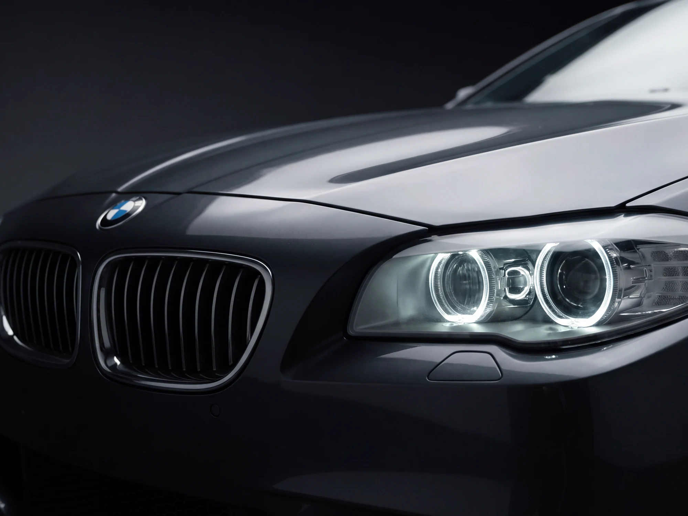
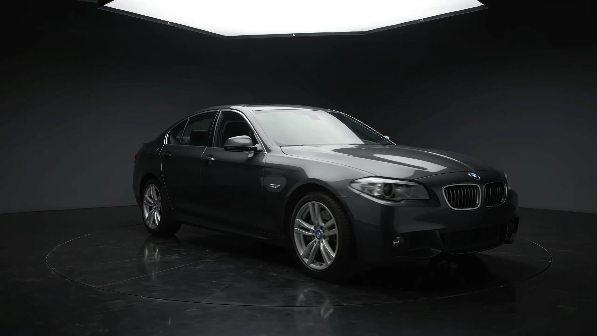
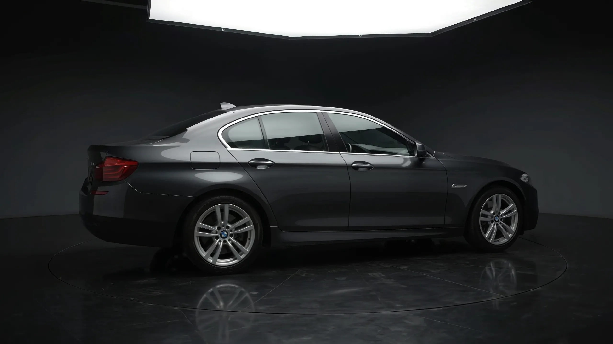
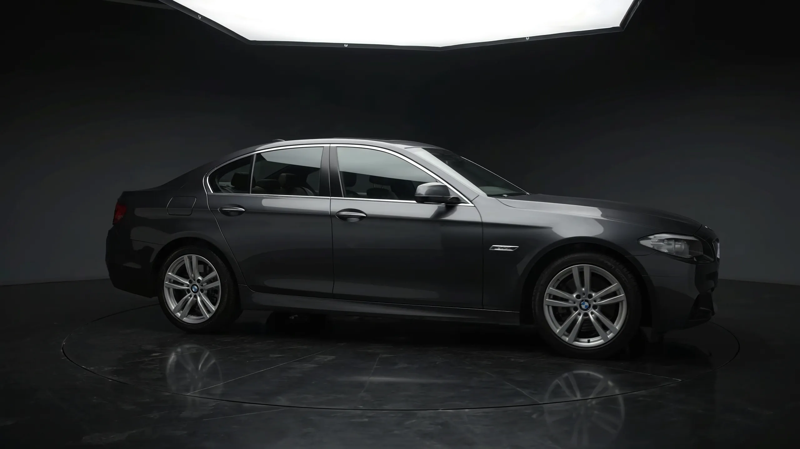
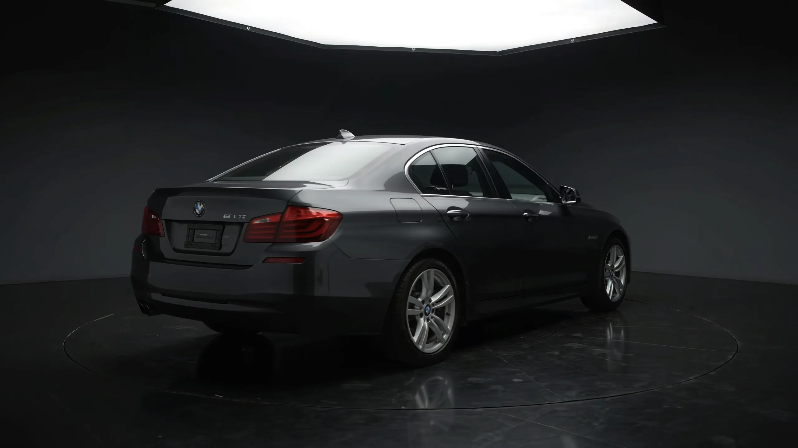
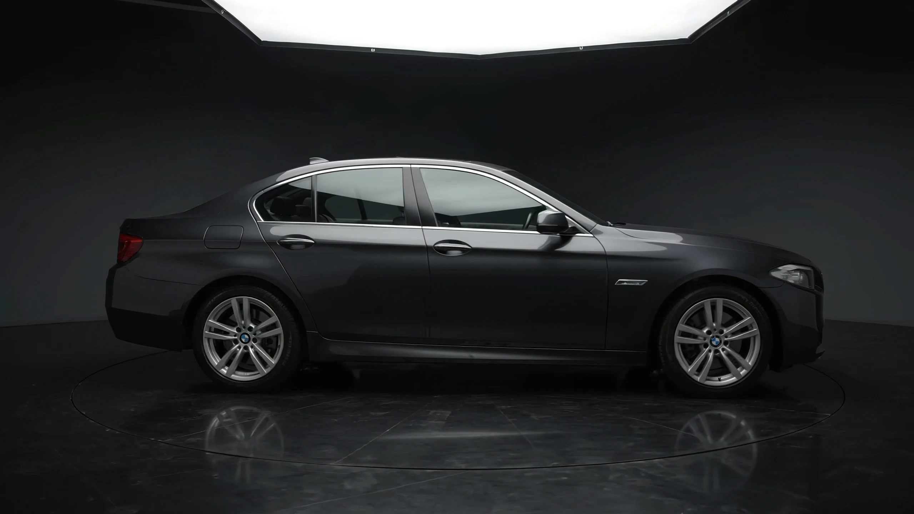
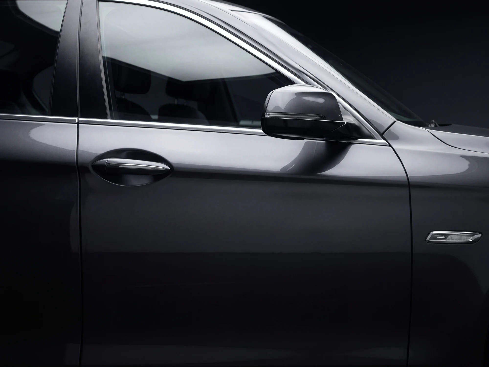
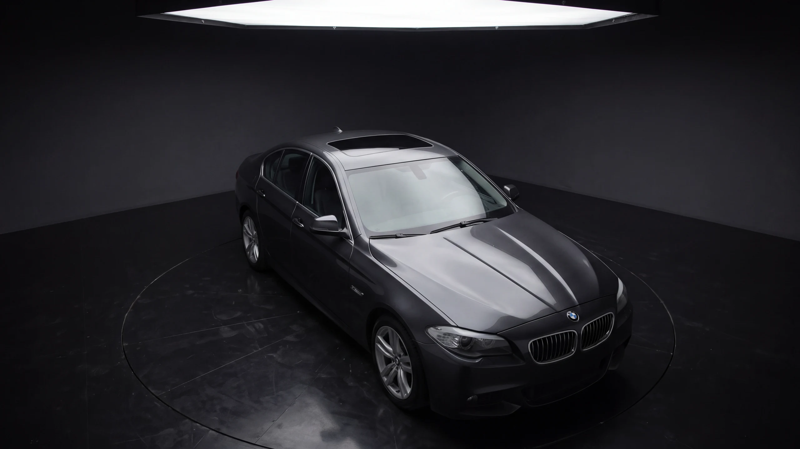
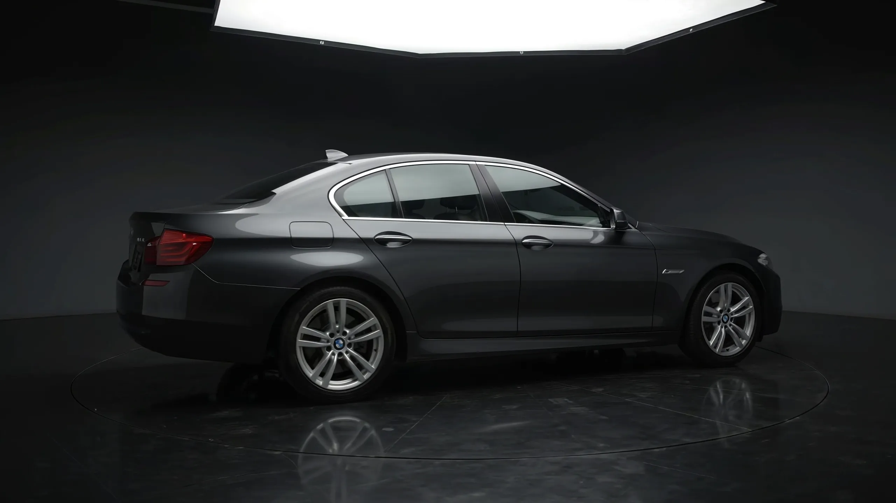
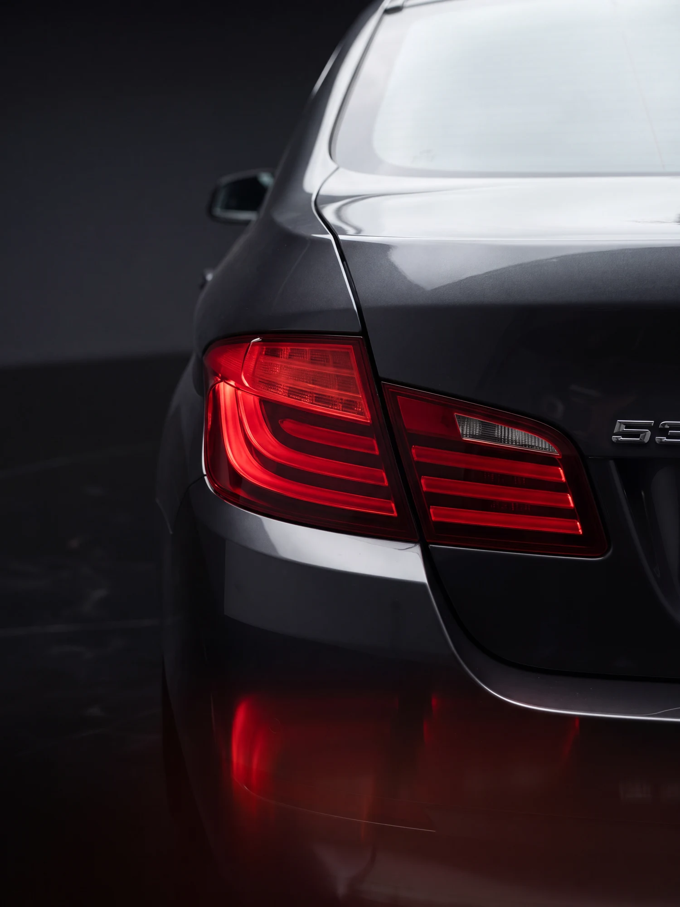

Пропорции
- Колёсная база 2 968 мм
- Сверхкороткий передний свес
- Развесовка 50 : 50 по осям
- Смещённый назад силуэт салона
Эта страница двигается вместе с вами.
Кадры и пространственные карточки в Hero реагируют на наклон вашего смартфона. Разрешите доступ к гироскопу для полного эффекта.
Это выглядит как простой выезд текста — вот какая математика работает в каждом кадре на самом деле.
Произносится как
бэ · эм · вэ эф-десять
Мюнхен / Завод Дингольфинг, Бавария, Германия
Шестое поколение 5-й серии под руководством шеф-дизайнера Эдриана ван Хойдонка и экстерьер-дизайнера Яцека Фролиха.
Линия, которая не стареет.
Экстерьер F10 построен на пересечении строгой немецкой инженерии и атлетичной пластики: длинный рельефный капот, смещённая назад кабина и точная игра света на каждой грани кузова.

Кольца дневного света и «ноздри» решётки — лицо, которое узнаёшь в зеркале заднего вида раньше, чем успеваешь прочитать шильдик.
Наведите на любой кадр для 3D-преломления света или нажмите, чтобы открыть полноэкранную панораму.




От фронтальной оптики до геометрии кормы — ключевые элементы экстерьера с мгновенным превью и панорамным увеличением.
Салон сдвинут назад, капот вытянут, передний свес минимальный. Пропорции заднеприводного седана читаются одним росчерком — от фары до фонаря.

Три кадра крупным планом, на которых видно качество штамповки, геометрии крыши и бокового рельефа.



Хороший дизайн седана не нуждается в громких жестах — его сила в натяжении поверхности, длинной базе и линии, которая остаётся современной спустя десятилетия.

Фонари тянутся поперёк кузова, кромка крышки багажника держит строгую горизонталь. Сзади машина выглядит так же собранно и устойчиво, как спереди.